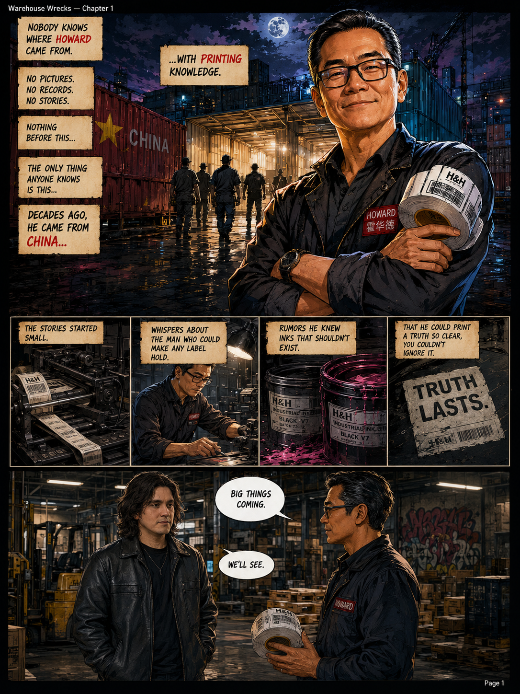
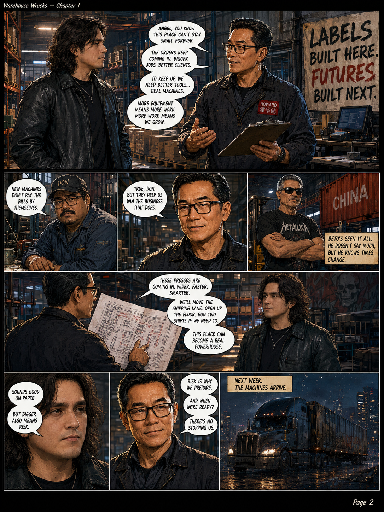
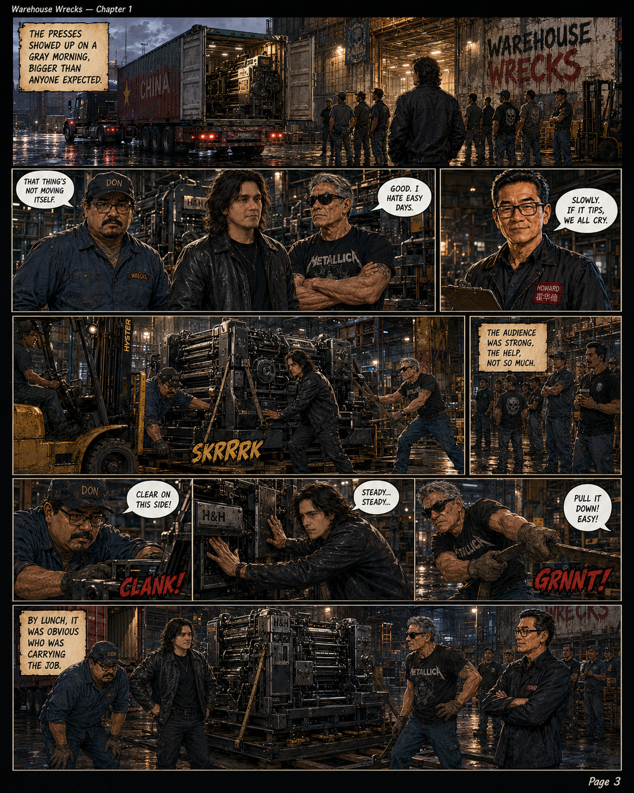
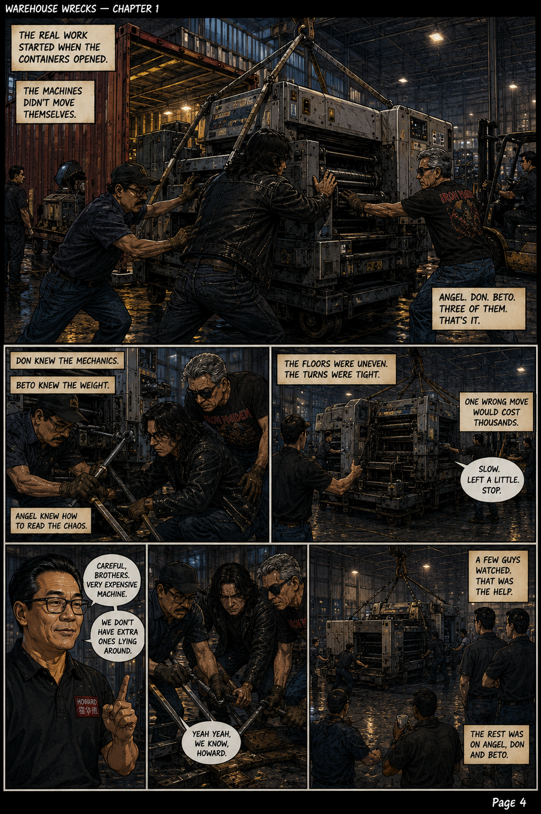
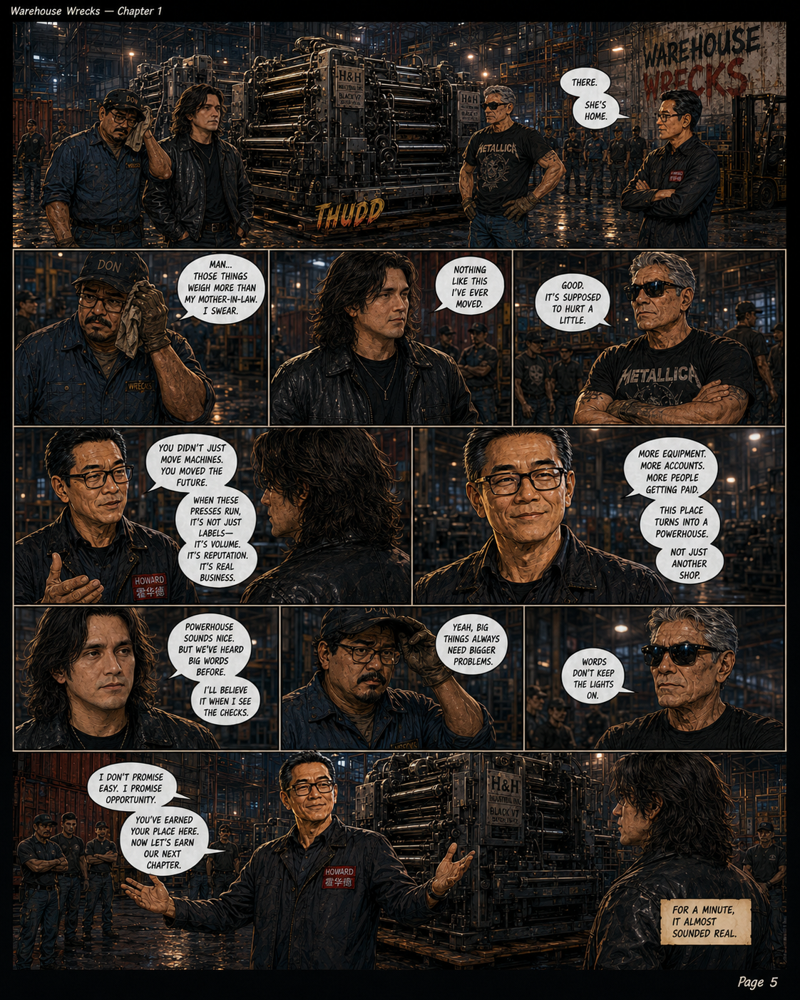
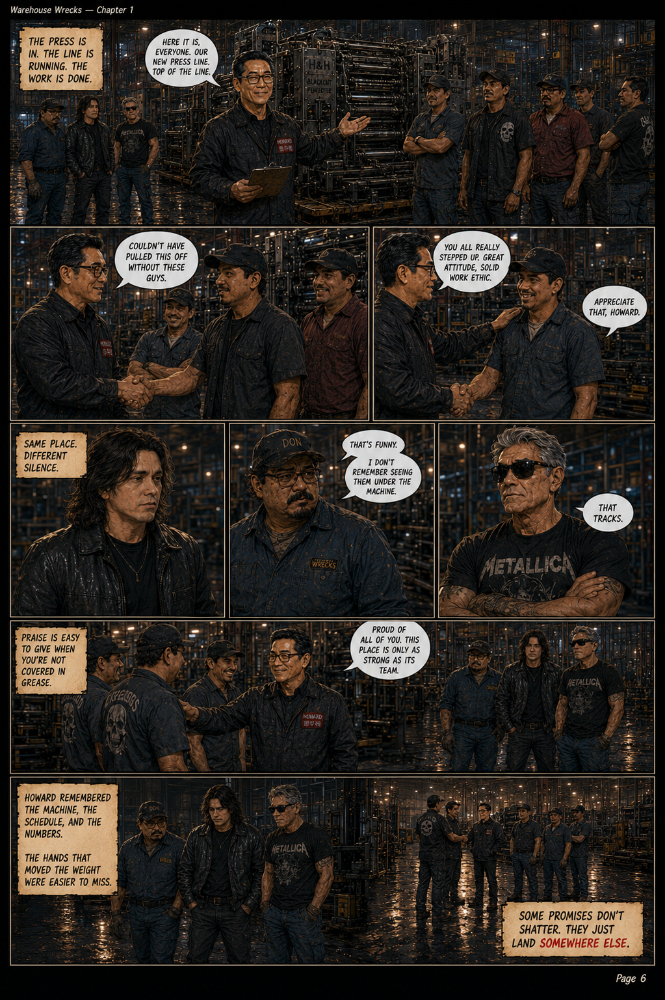
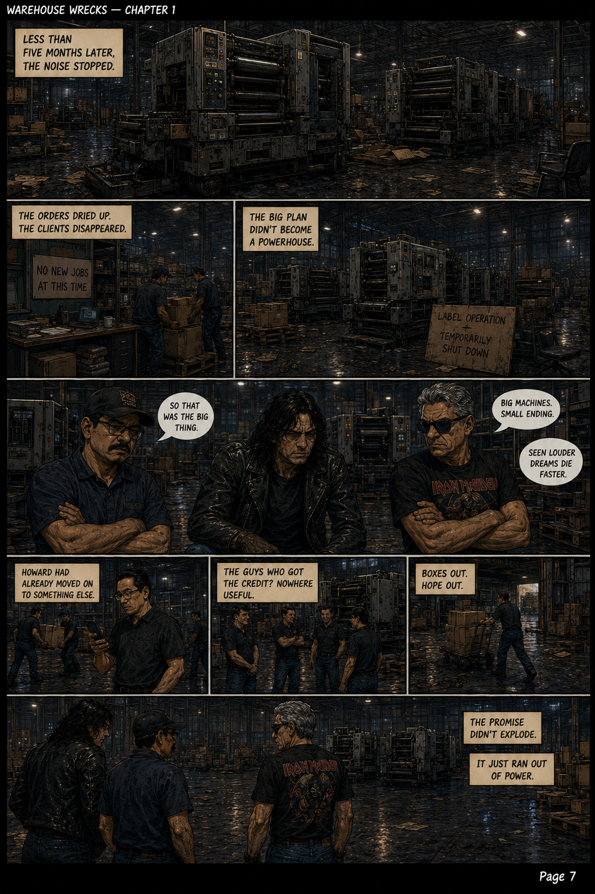

Chapter File
| Chapter | Chapter 1 |
|---|---|
| Title | Howard |
| Main Character | Howard |
| Related Characters | Angel, Don |
| Status | Available |
| Format | 8-page comic chapter |
Summary
Chapter 1 follows Howard, the label vendor who became one of the first major figures in the Warehouse Wrecks universe. His story connects printing, short labels, rushed jobs, forgotten orders, and the strange collapse of Abandoned Label Solutions.
The chapter works as a visual companion to the Howard-era songs, showing the world around the label chaos before Howard disappears from the known archive.
Related Songs
| Song | Connection | Archive Link |
|---|---|---|
| Ho Lee Sheet | The main Howard record. Introduces the label chaos and printing legend. | Listen |
| Thanks for Forgetting Me | A related Howard-era record connected to being forgotten inside the operation. | Listen |
Comic Pages
Chapter 1: Howard — 8-page archive scan.







Archive Notes
This chapter is connected to Howard’s character file and the early label chaos era. It is currently treated as the first visual chapter in the Warehouse Wrecks comic continuity.